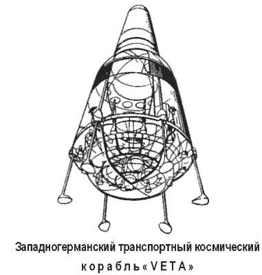
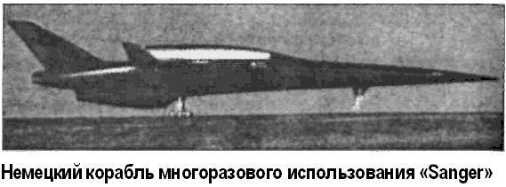

Немецкая космонавтика
Одним из первых космических проектов, связанных с пилотируемой космонавтикой и разрабатываемых на земле ФРГ, был проект одноступенчатого транспортного космического корабля многократного использования VETA.
Конструкция корабля базируется на технике и технологии ракеты «Сатурн-5» и отсеков кораблей «Аполлон». Считается, что основным преимуществом космического корабля «BETA» перед обычными ракетами является отсутствие сбрасываемых ступеней. Это позволяет запускать его со стартовых баз в европейских странах, а также производить посадку на площадки, не подготовленные для этой цели.
Кроме того, «ВЕТА» привлекает своей технической простотой и легкостью эксплуатации и обслуживания.
Конструкция космического корабля «BETA» отличается от конструкции обычной ракеты тем, что он имеет теплозащитный экран, шасси, а также малое отношение длины к диаметру.
Относительно большой диаметр корпуса корабля, равный 7,8 метра, обеспечивает снижение удельной нагрузки во время входа в атмосферу, а также более низкое расположение центра тяжести, что позволяет сохранять устойчивость в полете и при стоянке.
Требуемая стартовая тяга создается 12 ЖРД с камерами высокого давления.
Шасси рассчитано на скорость при контакте 8 м/с, затем она механически снижается до нуля. Шасси состоит из шести ног, но посадка безопасна и при наличии четырех ног (если две выйдут из строя).
Считается, что космический корабль «ВЕТА» имеет минимальные размеры для одноступенчатого аппарата многократного использования. «BETA» имеет стартовую массу 130 тонн, из которых 115 тонн приходится на топливо.
Номинальная масса полезного груза, выводимого на орбиту, равна 2,7 тонны. Если с корабля снять оборудование, необходимое для возвращения и посадки, то масса груза, выводимого на орбиту, возрастет до 4,2 тонны.
Конструкция корабля «BETA» позволяет устанавливать вторую ступень или специальный модуль с силовой установкой. При установке небольшой ступени с двигателем, развивающим тягу 1600 килограммов, можно доставить полезный груз массой 250 килограммов к планете Меркурий или вывести на геостационарную орбиту груз массой 700 килограммов.
Конструкторы полагали, что многократное использование корабля «BETA» снизит стоимость вывода на орбиту одного килограмма полезного груза до нескольких сот долларов.
Существенного улучшения характеристик одноступенчатого корабля можно достичь, модифицировав его в полутораступенчатый аппарат путем добавления внешних сбрасываемых баков.
Однако этот проект также не лишен некоторых недостатков.
Во-первых, стоимость сбрасываемых баков оказалась не такой низкой, как рассчитывали. Во-вторых, само сбрасывание баков и связанные с этим проблемы безопасности вдоль трассы неизбежно ведут к снижению оперативной универсальности, которая требуется от транспортного космического корабля.
Если «BETA» был кораблем традиционной ракетной схемы, то проект фирмы «Юнкерс» («Junkers»), представленный вниманию публики в 1965 году, основывался на схеме воздушного старта.
Над этим проектом, который финансировался правительством ФРГ, фирма работала с 1961 года.
Космическая система «Юнкерс» спроектирована в виде двухступенчатого космического самолета с параллельным расположением самолетных ступеней — по аналогии с проектом американской фирмы «Мартин». Силовые установки обеих ступеней работали на жидком водороде и кислороде.
Планировалось, что двухступенчатый космический самолет будет стартовать горизонтально с рельсовой катапульты и в момент разделения ступеней достигнет высоты 60 километров за 150 секунд. Нижняя ступень возвратится на базу планированием, вторая, меньшая, ступень разовьет первую космическую скорость и выйдет на орбиту высотой 300 километров.
Суммарный стартовый вес космической системы «Юнкере» — 200 тонн, орбитальная полезная нагрузка — 2,5 тонны.

Среди поздних проектов воздушно-космических аппаратов многоразового использования, разрабатываемых в Германии, особняком стоит проект «Зенгер» («Sanger»), названный так в честь немецкого конструктора Эйгена Зенгера, придумавшего бомбардировщик-«антипод».
«Зенгер» представляет собой перспективную двухступенчатую космическую систему — базовый аппарат в национальной технологической программе Германии по гиперзвуковым летательным аппаратам.
Практическая реализация программы «Зенгер» обеспечила бы европейским странам сравнительно дешевый и независимый от США доступ в космос с возможностью горизонтального старта с обычных воздушных взлетно-посадочных полос в Европе и непосредственного выведения полезного груза на любую заданную орбиту.
Применение в маршевых двигателях экологически чистых компонентов топлива — жидкого кислорода и жидкого водорода — исключает выброс в атмосферу вредных продуктов сгорания.
За период с 1984 по 1987 год проектных исследований по программе «Зенгер», выполненных фирмами «Мессершмитт-Бельков-Блом» («МВБ»), «Дорнье» («Dornje»), «МТУ» («MTU»), центром «ДФВЛР» («DFVLR») и авиакомпанией «Люфтганза» («Lufthansa»), изучен большой круг вопросов по аэродинамике, аэротермодинамике, управлению полетом, конструкциям и теплозащитным материалам и двигателям. Выполнены анализ и сравнение ряда вариантов летательного аппарата «Зенгер».

Габариты системы «Зенгер»: длина фюзеляжа — 81,3 метра, размах крыльев — 41,4 метра, полная масса — 340 тонн.
Первая ступень EHTV массой 259 тонн с максимальным (до 100 тонн) запасом водорода представляет собой двухкилевый самолет характерной стреловидной формы. Маршевая двигательная установка состоит из пяти комбинированных турбопрямоточных воздушно-реактивных двигателей. Умеренный нагрев конструкции ступени (не более 600 °C) при скорости 4–4,5 Маха позволил использовать титановые и алюминиево-литиевые сплавы. Особое внимание уделялось созданию бака жидкого водорода объемом более 1500 м? с обеспечением максимального теплопритока от несущей конструкции фюзеляжа.
Первая ступень разрабатывалась с учетом унификации ее характеристик с характеристиками перспективного гиперзвукового пассажирского самолета. Дальность крейсерского полета самолета с 250 пассажирами на борту составляла 10 тысяч километров. Скорость полета до 4,5 Маха, высота полета — 25 километров. Самолет мог преодолеть за три часа расстояние от Франкфурта-на-Майне до Токио через Лос-Анджелес.
Вторая ступень «Хорус» («Horus») является пилотируемым космическим летательным аппаратом, во многом сходным с орбитальными кораблями «Шаттл» и «Гермес».
Основное отличие — в наличии на борту большого (до 65,5 тонны) запаса кислородно-водородного топлива. Полная масса ступени — 87,7 тонны, используемый маршевый двигатель имеет тягу до 120 тонн.
Расчетная продолжительность орбитального полета составляла одни сутки. Корабль вмещает экипаж корабля — два пилота, четыре пассажира и две-три тонны груза.
В туристском варианте в кабине можно разместить до 36 пассажиров.
Главным назначением ступени «Хорус» является материальнотехническое обеспечение орбитальной станции.
Возможны суборбитальные перевозки пассажиров со скоростью до 16 000 км/ч.
Одновременно с «Хорусом» немецкие конструкторы проектируют грузовой аппарат «Каргус» («Cargus») одноразового использования — уменьшенная модификация ступени ракеты-носителя «Ариан-5». «Каргус» предназначен для выведения на низкую орбиту полезного груза до 15 тонн, с возможностью последующих стартов на геостационарную орбиту.
Габариты «Каргуса»: длина — 33 метра, диаметр — 5 метров, полная масса грузовой ступени — 62 тонны. Двигатель — кислородно-водородный «НМ60 Вулкан» с тягой приблизительно 105 тонн.
Схема полета воздушно-космического самолета «Зенгер» предполагалась следующая. После горизонтального взлета корабль выполняет подъем до высоты 25 километров, над критическим озоновым слоем, и далее на этой высоте совершает крейсерский полет со скоростью до 4,5 Маха. Трасса от старта в центре Европы или на побережье Германии, Франции, Испании или Англии направлена на заданную широту в сторону Америки. Затем следует участок разгона с набором высоты до 30 километров и увеличением скорости до 6,8–7 Махов. После разделения вторая ступень выходит на орбиту, а первая — возвращается к месту старта. Национальная программа предусматривала создание на предварительном этапе демонстрационной модели летательного аппарата, проведение летных испытаний, после чего на стыке столетий планировалось приступить к непосредственной разработке штатного корабля «Зенгер».
В середине 1990 года был завершен первый этап исследований по программе воздушно-космического летательного аппарата в рамках национальной программы Германии по гиперзвуковым летательным аппаратам.
По первой разгонной ступени, или самолету-разгонщику, выполнен второй цикл проектных разработок, подтвердивший концепцию в целом и компоновочную схему гиперзвукового самолета со скоростями полета 6,8 Маха. На втором этапе планировалось решение вопросов оптимизации массовых характеристик и интеграции двигательной установки.
По вторым ступеням осталась неизменной идеология создания двух различных вариантов — беспилотного и пилотируемого космического самолета. Исходя из экономических соображений, вместо одноразовой ступени «Каргус» будет разрабатываться беспилотный космический самолет «ХорусС» («Horus-C») с грузовым отсеком, который будет способен доставить на орбиту высотой 200 километров полезный груз массой до 7,7 тонны и до 6,2 тонны — на космическую станцию.
Пилотируемая ступень «Хорус-М» («Horus-M») со стыковочным и переходным отсеками предназначена для обслуживания космической станции, при этом масса выносимого полезного груза составляет 3 тонны, что включает и массу экипажа из трех человек.
По результатам первого этапа исследований были начаты предварительные проработки по экспериментальному самолету «Хитекс» («Hitex»), способному достигать скоростей порядка 5–6 Махов, с целью подтверждения данных численного моделирования и результатов аэродинамических продувок.
Работы над воздушно-реактивным прямоточным двигателем концерн «МББ» начал летом 1988 года, а в декабре уже провел стендовые испытания прототипа. Его диаметр не превышает 350 миллиметров, тогда как у «настоящего» достигнет 1,5 метра. Исследователи моделировали скорость 4,7 Маха, одновременно изыскивая оптимальную форму камеры сгорания. Кстати, у прототипа она охлаждалась пластмассовым кожухом, а в будущей силовой установке решено воспользоваться идеей Зенгера: перед тем как поступить в камеру сгорания, охлажденное до 230 °C горючее (сжиженный водород) пройдет по сети трубопроводов, пронизывающих ее тонкостенную оболочку, чтобы температура внутри не превышала плюс 1700 °C. Как рассчитывают немецкие специалисты, непрерывно охлаждаемая силовая установка станет меньше изнашиваться от перегрева.
После первого было еще четыре десятка экспериментальных пусков прототипа, и все прошли вполне благополучно.
Например, 7 июля 1990 года его вывели на режим, соответствующий реальному полету будущего «Зенгера» на высоте 20 000 метров со скоростью, равной 4 Махам; при этом тяга составила около тонны.